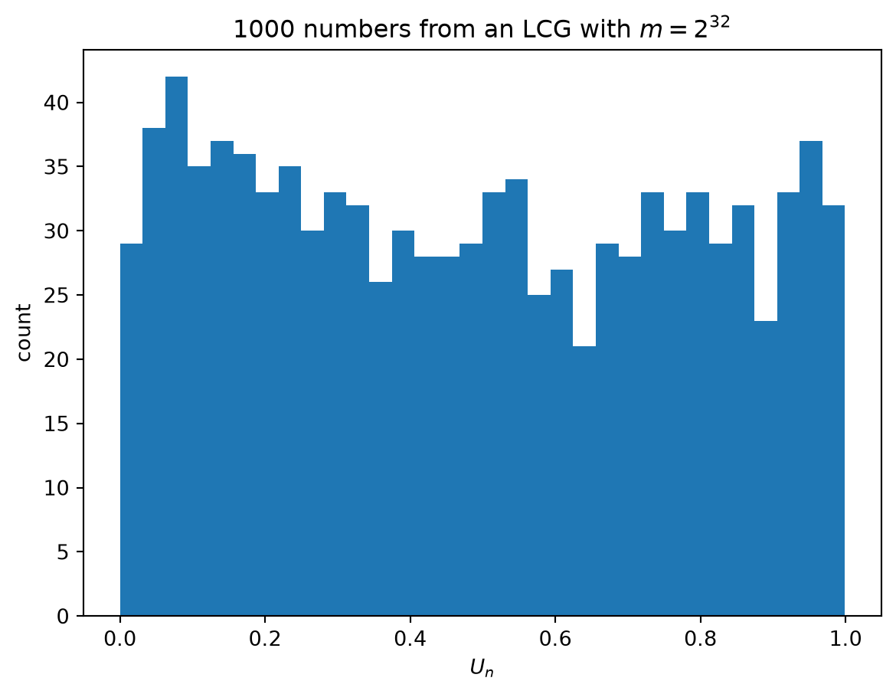
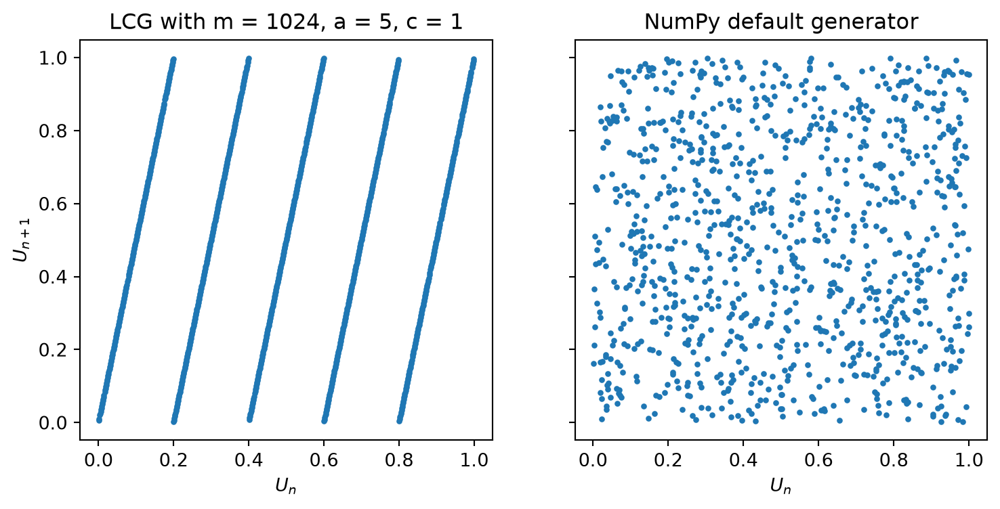

RNG and PRNG
Goals
- Understand that random numbers on computers are almost always deterministic sequences.
- Become familiar with NumPy’s
Generatorinterface: creating, seeding, sampling, and shuffling. - Adopt good habits for using RNGs.
- Use the LCG model to build intuition for auto-correlation in data.
Packages
Overview
- What is randomness? Humans talk about randomness in terms of absence of certain qualities, namely discernable patterns or predictability.
- Without a physical source of randomness, truly random numbers are expensive.
- Computers use PRNG, deterministic algorithms, to simulate different patterns of randomness.
- Pseudo-Random Number Generation (PRNG). Sometimes referred to RNG; the Pseudo is implicit.
The Generator interface
We met the basics of this interface in Working with Probability Distributions.
Creating a generator
A generator is an object that holds the current state of a PRNG and has a well-defined rule for producing seemingly random numbers using that state.
The generator delegates the actual work to a bit generator, which implements a specific algorithm. NumPy’s default algorithm is called PCG64.
Different algorithms represent their state in different ways. For PCG64 the state is a pair of large whole numbers:
{'bit_generator': 'PCG64',
'state': {'state': 159921109909665620735266810842552704232,
'inc': 157149187944795182014081422353945810659},
'has_uint32': 0,
'uinteger': 0}In practice, we rarely need to access or know the details of a generator’s state.
Drawing numbers
Every draw reads the state, computes a number, and updates the state.
array(['large', 'large', 'small', 'large', 'medium', 'large'], dtype='<U6')Methods for named distributions, such as .normal() and .poisson(), are covered in Working with Probability Distributions, and we will see in the next note how they can be built from uniform numbers.
Shuffling
.permutation(n) returns the numbers 0, 1, ..., n-1 in random order. Using that as an index lets you shuffle several arrays in exactly the same way, which keeps related values together.
Each customer still has their own spending amounts. Shuffling each array separately would break the pairing:
A shared index for rows of one table, or several arrays, keeps them aligned during shuffling.
If there is only one array, and you do not need to know how it was reordered, .permutation(array) returns a shuffled copy, and .shuffle(array) reorders the original in-place.
Seeds
The seed sets the starting state. Two generators of the same type created with the same seed produce the same numbers:
[0.86200941 0.38843713 0.9970794 ]
[0.86200941 0.38843713 0.9970794 ]To start over from the beginning of a sequence, create a new generator with the same seed:
The global generator
The following code simulates random numbers without reference to a generator object.
np.random.seed() and np.random.rand() use a single, hidden, global generator shared by the whole Python session. Using a global generator can make exact reproducibility difficult because it introduces opaque dependencies between code.
As an example, suppose a helper function happens to use random numbers:
[0.19151945 0.62210877 0.43772774]
[0.62210877 0.43772774 0.78535858]The second line differs from the first, even though the seed is identical, because helper() consumed one random number. In a long script, this kind of interaction is hard to track down. A generator object avoids the problem: it changes only when you draw from it.
The linear congruential generator
The linear congruential generator (LCG) is one of the oldest and simplest examples of a PRNG. Derrick Lehmer published a version of it in 1951 (with \(c = 0\)), and the general form below is attributed to William E. Thomson (1958) and Aubey Rotenberg (1960).
- It is simple to implement.
- It is fast, because it uses only multiplication, addition, and a remainder.
- It is not the fastest method, and it is not cryptographically secure. We examine it only as a tool for understanding how PRNGs work.
An LCG is defined by three whole numbers \(a\), \(c\), and \(m\), and one rule:
\[ X_{n+1} = (a X_{n} + c) \bmod m. \]
Here “\(\bmod m\)” means “the remainder after dividing by \(m\)”, which is the % operator in Python. The remainder is always one of \(0, 1, \ldots, m - 1\). As such, an LCG has at most \(m\) possible states.
Implementation
The rule takes the current number, the state, and returns the next one:
To produce a sequence, start from a seed and apply the rule repeatedly:
[10, 14, 2, 6, 10, 14, 2, 6, 10, 14, 2, 6]Notice anything? The sequence repeats after four steps.
The period
There are only \(m\) possible states, so the sequence must eventually return to a state it has already visited. From then on it repeats exactly. The number of steps before it repeats is the period, and it can be at most \(m\).
The example above has period 4, which is far less than \(m = 16\). The period depends on the choice of \(a\), \(c\), and \(m\). When \(m\) is a power of 2, the LCG reaches the full period \(m\) exactly when
- \(c\) is odd, and
- \(a - 1\) is a multiple of 4.
Above, \(c = 12\) is even. Changing it to \(c = 3\) gives the full period of 16:
[10, 5, 12, 15, 14, 9, 0, 3, 2, 13, 4, 7, 6, 1, 8, 11, 10, 5, 12, 15]The seed 10 comes back after 16 steps.
From whole numbers to uniform numbers
Dividing by \(m\) maps the states onto the interval \([0, 1)\):
\[ U_{n} = \frac{X_{n}}{m}. \]
With \(m = 16\) there are only 16 possible values. A usable generator needs a much larger \(m\). Here is a classic choice with \(m = 2^{32}\), which also satisfies both conditions for the full period:

The histogram is roughly flat, as it should be for uniform numbers. Once we can produce uniform numbers, we can simulate essentially any other distribution.
In Computer Arithmetic we saw that fixed-size integers wrap around when they overflow. That wrap-around is arithmetic modulo \(2^{M}\). Choosing \(m = 2^{32}\) or \(m = 2^{64}\) means the computer performs the “\(\bmod m\)” step at no extra cost, which is one reason LCGs are fast.
How to recognize non-randomness
A generator should produce numbers with no discernible pattern. Some things to check:
- A short period. The sequence repeats.
- Missing values. Some values never appear, or appear less often than they should.
- The wrong distribution. A histogram of many draws should match the intended distribution.
- Dependence between neighbors. Knowing one number should not help you predict the next. We can check this with the correlation between each number and the one after it, called the lag-1 autocorrelation.
- Checks in higher dimensions (pairs, triples, …) become progressively harder.
Here is an LCG with \(m = 1024\), \(a = 5\), and \(c = 1\). It meets both conditions, so it has the full period of 1024 and every value appears exactly once per period. Compare it with NumPy’s generator:
fig, axes = plt.subplots(1, 2, figsize=(9, 4), sharey=True)
# LCG plot
axes[0].scatter(small[:-1], small[1:], s=5)
axes[0].set_title("LCG with m = 1024, a = 5, c = 1")
axes[0].set_xlabel("$U_n$")
axes[0].set_ylabel("$U_{n+1}$")
# Numpy's plot
axes[1].scatter(good[:-1], good[1:], s=5)
axes[1].set_title("NumPy default generator")
axes[1].set_xlabel("$U_n$")
plt.show()
small[:-1]is every value except the last, andsmall[1:]is every value except the first. Plotting one against the other pairs each number with its successor.- On the left: The points fall on five lines. Knowing \(U_{n}\) helps us predict \(U_{n+1}\).
- On the right: No discernible pattern.
The correlation coefficient quantifies this relationship. It’s value is 0.19013745939384263 for our LCG and 0.018980726397078315 for Numpy’s generator.
Choosing a generator
- The generators in NumPy are chosen because they are fast and have extremely long periods. The default, PCG64, has a period of \(2^{128}\). It follows the same idea as our LCG, with a much larger state and an extra scrambling step applied to the output.
- You will also meet the Mersenne Twister (
MT19937). It is the default in R, and it is used by NumPy’s global generator. - Algorithms receive bug fixes and improvements over time. NumPy does not promise that a given seed produces exactly the same numbers in every future version. Write down the package versions you used if exact reproduction matters.
- In practice, conclusions should never depend on a specific seed. If a result holds for seed 206 and not for seed 207, it is not a result. Pick a seed before you look at any output, and leave it alone.
- The PRNGs we work with are designed for computational efficiency, not security. Applications that need secure random numbers, such as generating passwords, use other approaches.
Habits for writing simulations
Create the generator once
Because the seed fixes the sequence, creating a new generator with the same seed restarts the sequence. This function looks reasonable but has a bug:
[17 25 21 24 18]
[17 25 21 24 18]Each call returns the same “random” week. If you called this function 1000 times to study the variation in demand, you would find none.
Pass the generator as an argument
Create one generator near the top of your script, and hand it to every function that needs randomness.
[17 25 21 24 18]
[17 14 16 23 31]- The two calls differ, because the second call continues the sequence where the first one stopped.
- Running the whole script again reproduces both lines exactly.
- The function signature tells the reader that the function uses randomness. Nothing is hidden inside, and no global state is involved.
We follow this convention for the rest of the module: the first argument of a function that simulates something is rng.
Many functions outside NumPy accept a seed or a generator. In pandas, for example, df.sample(5, random_state=rng) draws a reproducible sample using your generator. Look for an argument named random_state, seed, or rng in the documentation.
Exercises
Reproducing a sequence.
- Create a generator with seed
2026and draw five numbers with.random(). - Create a second generator with the same seed. Draw two numbers, and then draw three more. Compare all five with your answer to (a).
- Repeat (b) with seed
2027. What changes?
- Create a generator with seed
Rolling dice. Use
.integers()to simulate 10 rolls of a six-sided die. (Check the documentation: is the upper bound included?)- Run your code twice in a row without re-creating the generator. Do you get the same rolls?
- Now re-create the generator with the same seed before each run. Do you get the same rolls?
Order sizes. Orders are small, medium, or large with probabilities 0.5, 0.3, and 0.2. Use
.choice()to simulate 1000 orders, and count how many of each size you get. Are the proportions close to the probabilities?Keeping data aligned. You have arrays
region = np.array(["West", "East", "West", "North", "East"])andrevenue = np.array([12.5, 8.0, 15.2, 6.1, 9.9]). Use a single call torng.permutation()to put both arrays in the same random order. Then use the first three positions as a “training” set and the last two as a “test” set.From global to local. Rewrite the following code so that it uses a generator created with
np.random.default_rng()in place of the global generator. Check that running your version twice gives the same output.